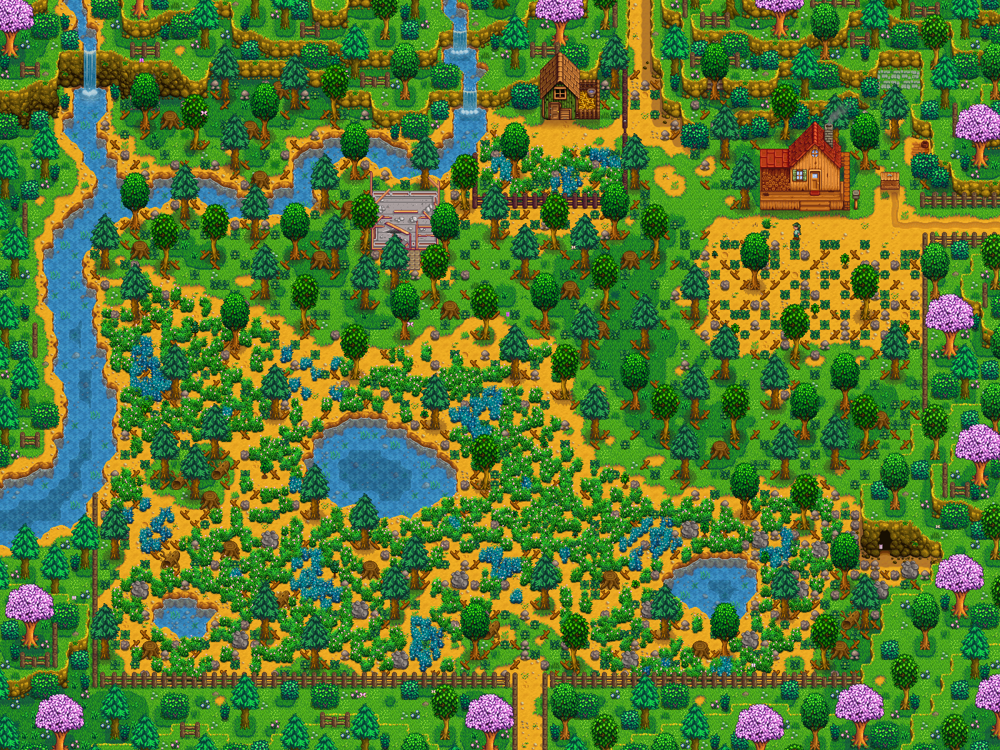
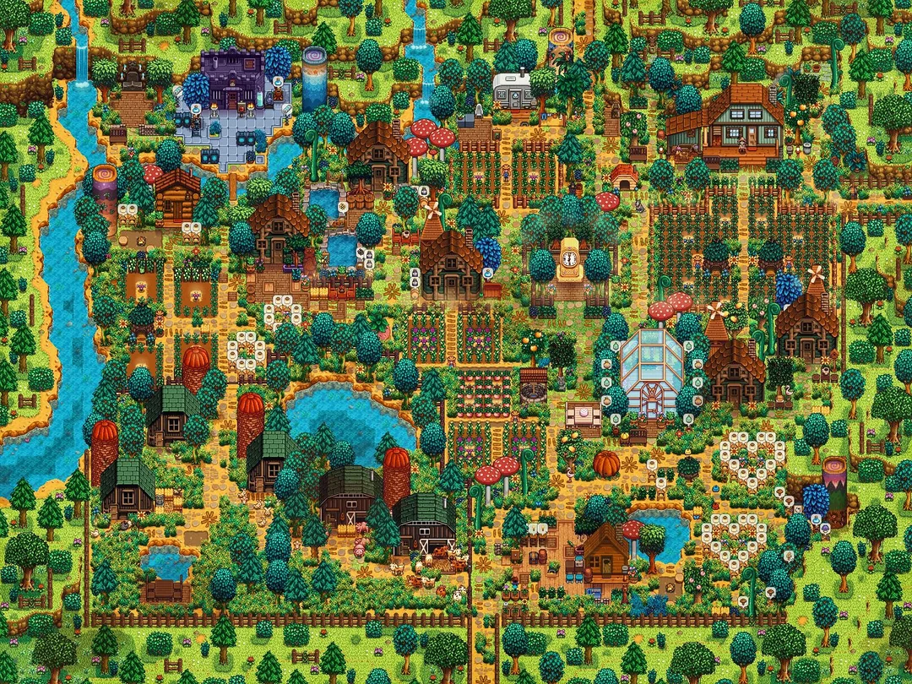

flowchart LR
A[Level 3] --> B[Level 4]
B --> C{Level 5}
C --> D[Rancher Profession]
C --> E[Tiller Profession]
An Introduction to Stardew Valley
The Premise
Stardew Valley1 by ConcernedApe is one of my favorite games. The premise of the game is that you, the main character, are gifted a mysterious letter by your grandfather before he passes away. He says to only use it when you are tired of the modern world.
If you’re reading this, you must be in dire need of a change. The same thing happened to me, long ago. I’d lost sight of what mattered most in life… real connections with other people and nature. So I dropped everything and moved to the place I truly belong. - Grandfather
Tired of a corporate, dead-end job, your character reads this letter and finds the deed to a farm in Stardew Valley, left to you by your grandfather.
Throughout the course of the game, you build the farm, raise crops and animals, befriend the locals of nearby Pelican Town, explore the mines, and try to build a better life for yourself. Stardew Valley is considered a ‘cozy game,’ with low-stress gameplay, soothing graphics, and a healthy dose of escapism. It also has a beautiful soundtrack, written by the developer ConcernedApe, and is an integral part of the Stardew Valley Experience. (Galloway 2019)
Tips for Farming
My favorite part of the game is the farming. I enjoy selecting crops for each season, running crop rotations, and creating the most efficient farm layout. The following sections will go through some basic things you should know about farming, so you can start setting up the systems you enjoy!
Tools
You start the game with a handful of tools. These tools are upgradeable, which will dramatically increase your productivity. The tools are:
- Watering can
- Hoe
- Scythe
- Axe
- Pickaxe
Leveling Up
There are five skills in Stardew Valley: Farming, Fishing, Foraging, Mining, and Combat. There are 10 levels in each, gained by taking actions related to the skill. Eacg time you level up, you get a little perk!
At levels 5 and 10, you get to choose which perk you gain, and adopt a “Profession.” Here is an example of the level progression in Farming:
Crops
There are roughly 20 crops for each season, excluding winter. This table shows my favorite crops per season.
| Season | Favorite Fruit | Favorite Vegetable |
|---|---|---|
| Spring | Strawberries | Potatoes |
| Summer | Blueberries | Red Cabbage |
| Fall | Cranberries | Pumpkins |
| Winter | Powder Melon | Winter Root |
A common formula for players to use on their own is the Minimum Gold per Day (MGPD) formula, which evaluates the profit value of a crop based on it’s max harvests (MH), its sell price per harvest (S), its seed price (SP), and it’s growing days/growth rate (GD): \(MGPD = \frac{(MH × S)-SP}{GD}\)
When crops are harvested, they gain a quality score. This dictates how much gold you get from selling the crop, and has some other gameplay mechanics. It is calcualted in the game with the following equation:
\[ Quality = 0.2 \frac{FL}{10} + 0.2B \frac{FL+2}{12} + 0.01 \]
(FL = Farming level, and B = Fertilizer Boost)
Farm Example: Meadowlands
On the left is an example of the Meadowlands Farm map at the beginning of the game. The farm takes a lot of work to clear, till, and build from the ground up. On the right is Reddit user memulias’ Meadowlands Farm, with buildings, pathways, and house upgrades!
 
Farm Over Time
This is Reddit user VileMeanss’ video of their farm, where they took a screen capture during every season to make a log of it’s progress. This is a great example of how your farm can evolve. The graphics are slightly different than base Stardew Valley, because this user has a modpack.
References
Galloway, Kate. 2019. “Soundwalking and the Aurality of Stardew Valley: An Ethnography of Listening to and Interacting with Environmental Game Audio.” In Music in the Role-Playing Game, 159–78. Routledge.
Footnotes
Check out the official Stardew Valley website↩︎